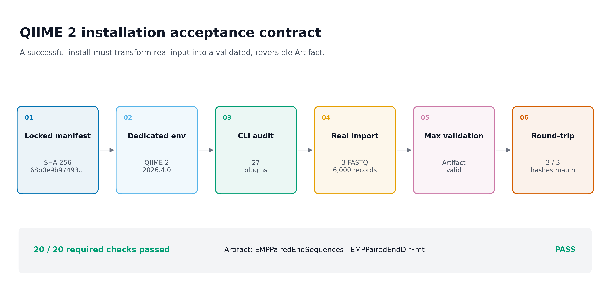
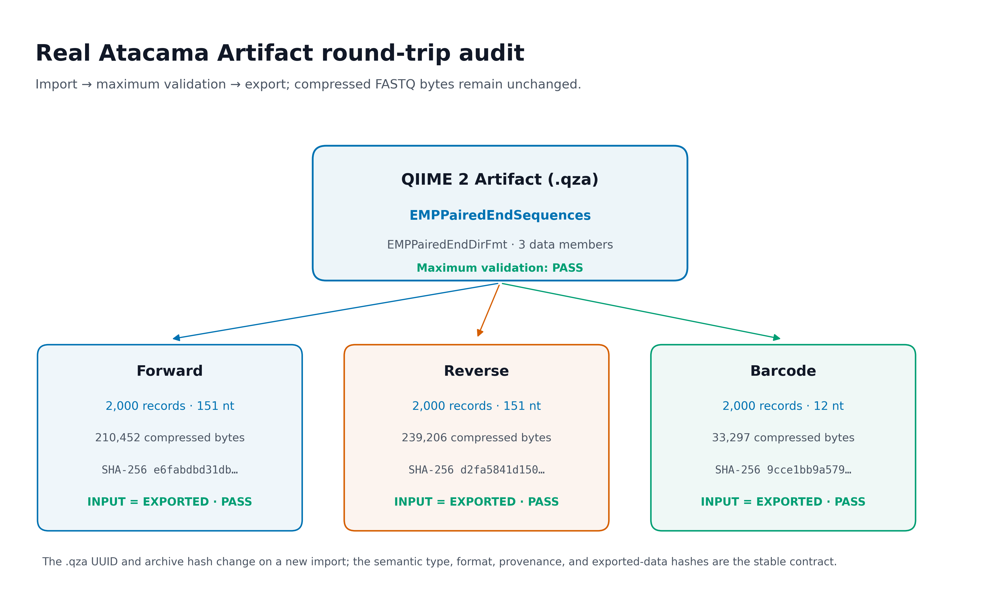
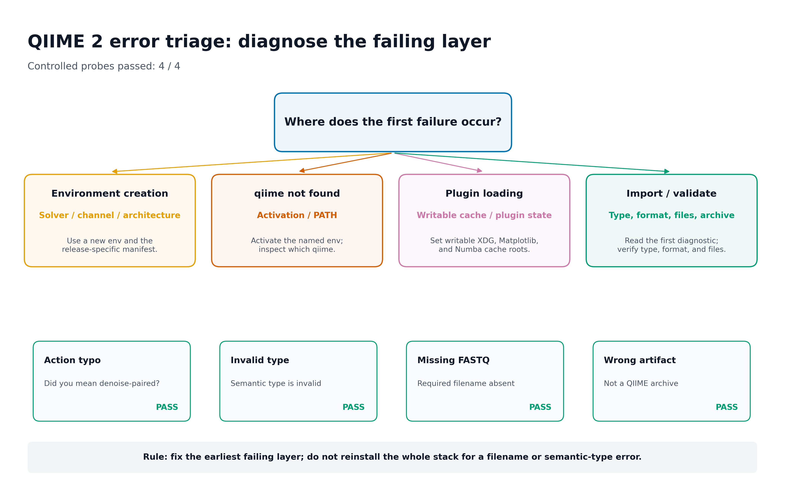

uname -srmo
uname -m
df -h .
conda --version
mamba --version
conda info --base安装 QIIME2 + 验证 + 报错对照
怎样确认 QIIME 2 真的安装正确？
安装过程通常不进入主文结果图，但它直接决定 Methods 与补充材料能否被第三方复现。最有用的呈现方式有三类：
- Computational environment 流程图：从锁定 manifest 到真实数据验收；
- Artifact round-trip audit：证明输入进入 QIIME 2 后类型正确、最大级别校验通过，并能无损导出；
- Troubleshooting decision tree：按环境、激活、插件加载、type/format 与 archive 层定位故障。



重要先记住一句话
qiime info 成功只证明 CLI 能启动；真正可接受的安装还必须让一组真实数据成功导入为正确 semantic type，经 qiime tools validate --level max 通过，再导出并与原始文件核对。
本次实测使用 QIIME 2 2026.4.0、q2cli 2026.4.0 与 Python 3.12.13，发现 27 个插件。真实 Atacama 摘录的三条同步 FASTQ 流各含 2,000 个 record；导入结果为：
Type: EMPPairedEndSequences
Data format: EMPPairedEndDirFmt
Validation: PASS (level=max)
Round-trip: 3/3 exported FASTQ SHA-256 values match预定义的 20 项安装、Artifact 与数据检查全部通过；四个受控失败探针也都返回了预期的非零 exit code 和诊断模式。
开始前：数据与运行环境
在 Linux 或 WSL2 的项目文件夹中运行下面的下载命令。Windows 用户先完成下文的 WSL2 安装，再回到 Ubuntu 终端执行。下载后保留这里的相对目录，后续命令使用同一组文件。
base_url="https://raw.githubusercontent.com/petemeng/microbiome-best-practices/3cb6a817e0c73ab7ecbec1cedc1ad80cbb9ecfaa"
for file in \
data/small/fastq/barcodes.fastq.gz \
data/small/fastq/forward.fastq.gz \
data/small/fastq/metadata.tsv \
data/small/fastq/reverse.fastq.gz \
data/small/fastq/source_summary.json \
env/qiime2.yml \
scripts/validate_qiime2_install.py
do
mkdir -p "$(dirname "$file")"
curl --fail --location --retry 3 "$base_url/$file" --output "$file" || break
done本次分析的数据、环境与图形设置
系统条件
- Linux x86_64，或 Windows 10/11 中的 WSL2 Linux；
- 已安装并初始化
conda/mamba； - 至少 10 GB 可用空间，推荐预留 20 GB；
- 项目目录与缓存目录对当前用户可写；
- 网络能访问 conda-forge、bioconda 与 QIIME 2 package channel；
- 不在 conda
base中安装分析 distribution。
检查：
本篇 Linux/WSL2 环境文件为：
env/qiime2.yml固定 SHA-256：
68b0e9b974937525b71cca3dec48b7dc5b6135f588a941d1313c118c2a41f4b5随文真实输入
data/small/fastq/
├── forward.fastq.gz
├── reverse.fastq.gz
├── barcodes.fastq.gz
├── metadata.tsv
└── source_summary.json三份 FASTQ 是 QIIME 2 官方 Atacama soils paired-end 1% 数据的确定性 2,000-record 摘录，来自 Neilson 等人的干旱土壤研究。原始来源、完整 1% 文件校验值和摘录规则记录在 source_summary.json。
随文输入固定值：
| 文件 | Records | Read length | SHA-256 |
|---|---|---|---|
forward.fastq.gz |
2,000 | 151 nt | e6fabdbd31db… |
reverse.fastq.gz |
2,000 | 151 nt | d2fa5841d150… |
barcodes.fastq.gz |
2,000 | 12 nt | 9cce1bb9a579… |
R 作图依赖与函数
QIIME 2 安装与 Artifact 检查在 shell 中完成。将审计表重绘为补充图时使用下面的 R 函数；复制文章时保留这段即可：
install.packages(c(
"ggplot2", "dplyr", "readr", "scales", "patchwork"
))library(ggplot2)
library(dplyr)
library(readr)
library(scales)
set.seed(20260719)
pal_pub <- c(
"#0072B2", "#D55E00", "#009E73", "#CC79A7",
"#E69F00", "#56B4E9", "#F0E442", "#999999"
)
scale_color_pub <- function(...) {
ggplot2::scale_color_manual(values = pal_pub, ...)
}
scale_fill_pub <- function(...) {
ggplot2::scale_fill_manual(values = pal_pub, ...)
}
theme_pub <- function(base_size = 12) {
ggplot2::theme_bw(base_size = base_size, base_family = "sans") +
ggplot2::theme(
panel.grid = ggplot2::element_blank(),
axis.text = ggplot2::element_text(color = "black"),
axis.ticks = ggplot2::element_line(
color = "black",
linewidth = 0.3
),
plot.title.position = "plot",
legend.key = ggplot2::element_blank(),
legend.background = ggplot2::element_rect(
fill = scales::alpha("white", 0.6),
color = NA
)
)
}
save_pub <- function(
plot,
file_base,
width = 180,
height = 115,
units = "mm",
dpi = 300,
write_tiff = TRUE
) {
dir.create(
dirname(file_base),
recursive = TRUE,
showWarnings = FALSE
)
ggplot2::ggsave(
paste0(file_base, ".pdf"),
plot,
width = width,
height = height,
units = units,
device = grDevices::cairo_pdf
)
ggplot2::ggsave(
paste0(file_base, ".png"),
plot,
width = width,
height = height,
units = units,
dpi = dpi,
bg = "white"
)
if (isTRUE(write_tiff)) {
ggplot2::ggsave(
paste0(file_base, ".tiff"),
plot,
width = width,
height = height,
units = units,
dpi = dpi,
compression = "lzw",
bg = "white"
)
}
invisible(plot)
}QIIME 2 的“安装成功”究竟指什么
安装的是 distribution，不是一个孤立 Python 包
QIIME 2 把框架、命令行接口和插件组织为 distribution。扩增子分析所需的 demux、cutadapt、dada2、feature-classifier、feature-table、diversity、phylogeny 与 fragment-insertion 等插件需要以一组兼容版本共同安装。
这也是为什么下面的做法不可靠：
pip install qiime2即使某个 Python 包能够安装，它也没有证明整套 amplicon distribution 的插件和非 Python 依赖兼容。正确做法是使用对应 release、平台与 distribution 的 conda manifest，在新环境中创建完整部署。
当前 Linux / Windows WSL2 主线使用 release 2026.4。环境名称不是软件版本证据，但把 release 写进名称可以减少误用：
microbiome-qiime2-2026.4release、软件版本与环境 manifest 是三层信息
本次环境记录包含：
| 层级 | 实测值 | 作用 |
|---|---|---|
| QIIME 2 release | 2026.4 | 对应发布周期与 distribution |
| QIIME 2 / q2cli | 2026.4.0 / 2026.4.0 | 对应实际框架与 CLI 版本 |
| Python | 3.12.13 | 对应解释器运行时 |
| Environment manifest | SHA-256 68b0e9b97493… |
固定完整依赖解析结果 |
| Registered plugins | 27 | 证明部署发现了预期插件集合 |
只在 Methods 写“QIIME 2 was used”缺少可复现强度。至少还要报告 release、关键 action、参数、环境文件和输入来源。
semantic type 回答“数据是什么”
QIIME 2 导入时不是简单压缩文件，而是给数据附加 semantic type（语义类型）。本次输入是仍然混样、具有独立 barcode reads 的 EMP paired-end 数据，因此类型为：
EMPPairedEndSequences它不同于已经拆样的：
SampleData[PairedEndSequencesWithQuality]两者都含 paired-end reads，但生物信息学状态不同。前者还需要依据 metadata barcode mapping 拆样；后者已经按样本分文件。错误的 semantic type 可能在导入时立即失败，也可能把问题推迟到后续 action 的类型检查。
data format 回答“文件怎样落盘”
同一个 semantic type 可以有一种或多种可接受的物理格式。官方 Artifact class 记录中，EMPPairedEndSequences 的标准目录格式是：
EMPPairedEndDirFmt它要求目录内存在三个固定文件名：
forward.fastq.gz
reverse.fastq.gz
barcodes.fastq.gz三份文件的 record 顺序定义 forward、reverse 和 barcode 之间的对应关系。文件名、record 数或顺序任一错误，都可能破坏配对关系。metadata.tsv 不属于这个导入目录；它在拆样 action 中通过 metadata 参数另行传入。
Artifact 保存数据、类型、校验与 provenance
.qza 是 QIIME 2 Artifact。它通常包括：
<UUID>/
├── VERSION
├── metadata.yaml
├── checksums.sha512
├── data/
└── provenance/本次真实 Artifact 中有三份 data/*.fastq.gz、checksum manifest、创建 action、环境记录和 citations。后续 QIIME 2 action 读取的不只是字节，还读取 semantic type 与 provenance。
不要把 .qza 当普通 ZIP 手工修改。需要交给其他软件时使用 qiime tools export；需要检查内容时优先使用 peek、validate 和 QIIME 2 provenance 工具。
.qza 哈希变化不等于数据漂移
每次新导入都会产生新的 UUID，并记录创建时间和 provenance。因此，即使输入完全一致，整个 .qza 的 SHA-256 和压缩后字节数也可能变化。
安装验收应比较稳定合同：
| 稳定验收项 | 本次结果 |
|---|---|
| Semantic type | EMPPairedEndSequences |
| Data format | EMPPairedEndDirFmt |
| Maximum validation | PASS |
| Provenance present | PASS |
| Forward export SHA-256 | 与输入一致 |
| Reverse export SHA-256 | 与输入一致 |
| Barcode export SHA-256 | 与输入一致 |
Artifact UUID 和整个 archive hash 仍应记录，方便定位某次运行，但不应被误当作跨运行必须相同的复现条件。
深入：为什么 qiime info 成功后，第一次真实 import 仍可能失败
qiime info 主要检查框架、CLI 和插件注册信息；真实导入会进一步加载插件模块、transformer、目录格式与相关 Python 依赖。当前服务器第一次直接导入时，CLI 已能报告 27 个插件，但插件加载经过 q2-diversity → umap → numba 时，Numba cache 指向当前执行边界不可写的位置，最终返回：
RuntimeError: cannot cache function 'rdist': no locator available这个报错发生在插件加载层，不是 FASTQ 质量、semantic type 或 barcode 问题。把以下缓存显式指向可写目录后，同一环境、同一输入和同一导入命令成功：
export XDG_CACHE_HOME="${TMPDIR:-/tmp}/qiime2-cache-$(id -u)/xdg"
export MPLCONFIGDIR="${TMPDIR:-/tmp}/qiime2-cache-$(id -u)/matplotlib"
export NUMBA_CACHE_DIR="${TMPDIR:-/tmp}/qiime2-cache-$(id -u)/numba"
mkdir -p "$XDG_CACHE_HOME" "$MPLCONFIGDIR" "$NUMBA_CACHE_DIR"这说明验收必须覆盖真实 action 路径；单看版本打印无法发现所有运行时写权限问题。
安装QIIME 2并完成一次真实导入
确认平台与环境管理器
下面命令在 Linux 或 WSL2 Ubuntu 终端运行：
set -euo pipefail
test "$(uname -s)" = "Linux"
test "$(uname -m)" = "x86_64"
command -v conda
command -v mamba
conda --version
mamba --version
df -h .Windows 用户还应在管理员 PowerShell 单独确认目标发行版是 WSL2：
wsl.exe --list --verbose核对固定环境文件
进入项目根目录：
cd "$HOME/projects/microbiome-best-practices"
sha256sum env/qiime2.yml必须得到：
68b0e9b974937525b71cca3dec48b7dc5b6135f588a941d1313c118c2a41f4b5 env/qiime2.yml如果哈希不同，先确认文件来源和 release，不要继续使用文中的预期版本解释结果。
也可以按 QIIME 2 Library 当前 release 的 Linux/WSL2 命令直接创建官方环境：
conda env create \
--name rachis-qiime2-2026.4 \
--file \
https://raw.githubusercontent.com/qiime2/distributions/refs/heads/dev/2026.4/qiime2/released/rachis-qiime2-linux-64-conda.yml直接 URL 适合快速开始；正式项目应把成功使用的 manifest 保存进仓库并计算 SHA-256，避免上游文件在未来变化而无法解释。
创建独立 QIIME 2 环境
确保没有把安装目标设为 base：
conda deactivate || true
mamba env create \
-n microbiome-qiime2-2026.4 \
-f env/qiime2.yml \
--channel-priority flexible本次真实求解安装 676 个包，下载约 895 MB。主机的 strict channel priority 无法同时解析固定 manifest 中的 deblur 1.1.1 与 sortmerna 2.0；对同一 manifest 使用 flexible priority 后成功。
这不是允许任意混加 channel。仍然使用原文件中的固定 channel 顺序与包版本，只改变 solver 的 channel-priority 策略，并把这一事实写入环境记录。
激活并确认命令来源
conda activate microbiome-qiime2-2026.4
printf 'environment=%s\n' "$CONDA_DEFAULT_ENV"
command -v python
command -v qiime
python --version
qiime info实测核心输出：
Python version: 3.12.13
QIIME 2 release: 2026.4
QIIME 2 version: 2026.4.0
q2cli version: 2026.4.0
Installed plugins: 27command -v qiime 应指向当前命名环境，而不是 base、系统 Python 或另一个旧 release。
为共享服务器准备可写缓存
普通个人 Linux/WSL 主目录通常可写，这段不会成为必需条件；共享服务器、容器或受限任务节点建议显式设置：
CACHE_ROOT="${TMPDIR:-/tmp}/qiime2-cache-$(id -u)"
mkdir -p \
"$CACHE_ROOT/xdg" \
"$CACHE_ROOT/matplotlib" \
"$CACHE_ROOT/numba"
chmod 700 "$CACHE_ROOT"
export XDG_CACHE_HOME="$CACHE_ROOT/xdg"
export MPLCONFIGDIR="$CACHE_ROOT/matplotlib"
export NUMBA_CACHE_DIR="$CACHE_ROOT/numba"
export MPLBACKEND=Agg若第一次真实 action 出现 Matplotlib、fontconfig 或 Numba cache 不可写警告，先修正缓存层，再判断数据或插件。
核对真实 FASTQ
sha256sum \
data/small/fastq/forward.fastq.gz \
data/small/fastq/reverse.fastq.gz \
data/small/fastq/barcodes.fastq.gz
gzip -t \
data/small/fastq/forward.fastq.gz \
data/small/fastq/reverse.fastq.gz \
data/small/fastq/barcodes.fastq.gz预期 SHA-256：
e6fabdbd31db519c719447f1caf2d1cd334c6ab932353e534ea2433ead88d254 forward.fastq.gz
d2fa5841d150fead5a73067a267ec531221de11c512a38ec32ada03f1621bf65 reverse.fastq.gz
9cce1bb9a57975d14b54a5cf07c89b2b7c2095da4a8f0d1bd2720f1349e74057 barcodes.fastq.gz建立严格的 EMP 输入目录
不要直接把包含 metadata、JSON 和其他文件的工作目录交给目录格式。创建只含三份 FASTQ 的输入目录：
RUN_TAG="$(date -u +%Y%m%dT%H%M%SZ)"
WORK_DIR="results/08-qiime2-install/manual-${RUN_TAG}"
EMP_DIR="$WORK_DIR/emp-paired-end-sequences"
mkdir -p "$EMP_DIR"
cp data/small/fastq/forward.fastq.gz "$EMP_DIR/"
cp data/small/fastq/reverse.fastq.gz "$EMP_DIR/"
cp data/small/fastq/barcodes.fastq.gz "$EMP_DIR/"
find "$EMP_DIR" \
-maxdepth 1 \
-type f \
-printf '%f\n' |
sort应只显示：
barcodes.fastq.gz
forward.fastq.gz
reverse.fastq.gz真实导入为 QIIME 2 Artifact
ARTIFACT="$WORK_DIR/atacama-emp-paired-end.qza"
qiime tools import \
--type EMPPairedEndSequences \
--input-path "$EMP_DIR" \
--output-path "$ARTIFACT"成功输出应明确报告输入被识别为 EMPPairedEndDirFmt。这一步不拆样，也不读取 metadata.tsv；它只把仍然 multiplexed 的 EMP paired-end 数据导入 Artifact。
最大级别校验与类型检查
qiime tools validate \
"$ARTIFACT" \
--level max
qiime tools peek \
--tsv \
"$ARTIFACT"本次真实输出：
Filename Type UUID Data Format
atacama-emp-paired-end.qza EMPPairedEndSequences <run-specific UUID> EMPPairedEndDirFmtvalidate 必须返回：
appears to be valid at level=maxUUID 每次导入不同，不要拿文中的 UUID 当预期值。
导出并逐字节回验
EXPORT_DIR="$WORK_DIR/exported"
mkdir -p "$EXPORT_DIR"
qiime tools export \
--input-path "$ARTIFACT" \
--output-path "$EXPORT_DIR"
for file in \
forward.fastq.gz \
reverse.fastq.gz \
barcodes.fastq.gz
do
cmp \
"$EMP_DIR/$file" \
"$EXPORT_DIR/$file"
printf '%s\tPASS\n' "$file"
done再保存哈希：
{
printf '# input\n'
sha256sum "$EMP_DIR"/*.fastq.gz
printf '# exported\n'
sha256sum "$EXPORT_DIR"/*.fastq.gz
} \
> "$WORK_DIR/round-trip-sha256.txt"本次三份文件均逐字节相同。它证明 import/export 没有悄悄重编码或重压缩这三份 gzip 输入。
查看 archive 结构但不修改
unzip -l "$ARTIFACT" |
sed -n '1,30p'检查 metadata.yaml、checksums.sha512、data/ 与 provenance/ 是否存在。不要执行“解压后改文件再压回 .qza”的操作；那会破坏内部校验与 provenance。
运行完整的可审计验收
以下验收命令会创建临时 EMP 目录、设置可写缓存、完成真实 import/validate/export、扫描 archive，并执行四个预期失败探针：
python3 scripts/validate_qiime2_install.py \
--project-root . \
--output-dir results/08-qiime2-install \
--figure-dir figures它生成：
results/08-qiime2-install/
├── atacama-emp-paired-end.qza
├── qiime-info.txt
├── installation-audit.tsv
├── artifact-peek.tsv
├── artifact-content-audit.tsv
├── artifact-summary.json
├── error-probes.tsv
└── import-validation.log
figures/
├── 08-qiime2-install-contract.pdf / .png / .tiff
├── 08-artifact-smoke-audit.pdf / .png / .tiff
└── 08-error-triage.pdf / .png / .tiff真实验收摘要：
| 指标 | 观察值 | 状态 |
|---|---|---|
| Environment manifest | SHA-256 fixed | PASS |
| QIIME 2 / q2cli | 2026.4.0 / 2026.4.0 | PASS |
| Registered plugins | 27 | PASS |
| Real EMP import | exit 0 | PASS |
| Artifact type / format | expected / expected | PASS |
| Maximum validation | exit 0 | PASS |
| Provenance members | present | PASS |
| Exported FASTQ hashes | 3 / 3 match | PASS |
| Synchronized records | 2,000 × 3 | PASS |
| Controlled error probes | 4 / 4 | PASS |
| Required checks | 20 / 20 | PASS |
用导入与导出检查安装结果
把完整日志与审计图分工
终端截图不适合作为唯一证据：字体小、路径可能泄露、不能检索，也很难比较 observed 与 expected。推荐三层输出：
| 输出 | 放什么 | 用途 |
|---|---|---|
import-validation.log |
命令、exit code、stdout/stderr、耗时 | 完整审计 |
*.tsv / *.json |
observed、expected、status、hash | 机器检查 |
| PDF/PNG/TIFF | 关键层与 PASS/FAIL | 论文补充图与公众号 |
公开日志应把主机用户目录、临时目录和私有项目路径替换为 <HOME>、<PROJECT_ROOT> 等占位符；不要把 token、密码、对象存储签名 URL 或受限数据路径写进图。
从审计表重绘 validation matrix
audit <- readr::read_tsv(
"results/08-qiime2-install/installation-audit.tsv",
show_col_types = FALSE
) |>
dplyr::mutate(
check = factor(check, levels = rev(check)),
status = factor(status, levels = c("PASS", "FAIL"))
)
p_audit <- ggplot(
audit,
aes(x = 1, y = check, fill = status)
) +
geom_tile(
width = 0.95,
height = 0.78,
color = "white",
linewidth = 0.8
) +
geom_text(
aes(label = paste(observed, status, sep = " · ")),
color = "white",
fontface = "bold",
size = 3.0
) +
scale_fill_manual(
values = c(PASS = "#009E73", FAIL = "#D55E00"),
drop = FALSE
) +
labs(
title = "QIIME 2 installation acceptance audit",
subtitle = "Observed value and predefined contract status",
x = NULL,
y = NULL,
fill = "Status"
) +
theme_pub(10) +
theme(
axis.text.x = element_blank(),
axis.ticks.x = element_blank(),
legend.position = "top"
)
save_pub(
p_audit,
"figures/08-installation-audit-matrix",
width = 180,
height = 150
)图注必须说明“验收了什么”
推荐图注：
QIIME 2 installation acceptance audit. A release-locked QIIME 2 2026.4 environment was evaluated using a synchronized 2,000-record excerpt of the Atacama EMP paired-end data. The input was imported as
EMPPairedEndSequences, validated at the maximum level, and exported without changes to the SHA-256 hashes of the forward, reverse, or barcode FASTQ files. All 20 predefined checks passed.
若你只执行了 qiime info，不能使用这段图注；必须把真实 import、maximum validation 和 export hash check 删除。
图里只保留稳定证据
不建议把 UUID 或整个 .qza SHA-256 画成跨运行基准。更适合放图的是：
- release 与软件版本；
- plugin 数及关键 action 是否存在；
- semantic type 与 data format；
- maximum validation status；
- provenance 是否存在；
- 输入/导出数据哈希是否一致；
- error probes 的失败层与诊断。
常见坑
注意坑 1：在 base 中安装 QIIME 2
症状：更新 conda 或另一个工具后，QIIME 2 插件消失或依赖冲突。
处理：为每个 release 建独立命名环境。base 只保留环境管理器；环境损坏时从固定 manifest 重建。
注意坑 2：Linux、Intel Mac 与 Apple Silicon 共用同一个 manifest
不同平台需要对应的官方文件。Linux/WSL2 使用 linux-64；Intel Mac 使用 osx-64。当前官方 Apple Silicon 路径使用 Rosetta 2 与 CONDA_SUBDIR=osx-64。不要把 Linux manifest 强行装到 macOS。
注意坑 3：strict channel priority 求解失败
本次固定 manifest 在主机 strict 模式下出现 deblur 1.1.1 / sortmerna 2.0 冲突，而 flexible 模式成功。先保存完整 solver 日志，再对同一个官方 manifest尝试：
mamba env create \
-n microbiome-qiime2-2026.4 \
-f env/qiime2.yml \
--channel-priority flexible不要随意删除依赖、混入 defaults 或把多个 release 的 channel 拼在一起。
注意坑 4：qiime: command not found
conda env list
conda activate microbiome-qiime2-2026.4
echo "$CONDA_DEFAULT_ENV"
command -v qiime
qiime info若环境存在但当前 shell 不能激活，先加载 conda shell 初始化脚本；不要用 pip install 临时补一个同名命令。
注意坑 5：qiime info 成功，但 import 报 Numba/Matplotlib cache 错误
这是运行时缓存写权限层，不是 FASTQ 层。将 XDG_CACHE_HOME、MPLCONFIGDIR 与 NUMBA_CACHE_DIR 指向当前用户可写目录，再原样重跑 import。不要先改 semantic type 或重新下载数据。
注意坑 6：Semantic type … is invalid
实测探针：NotARealSemanticType 返回非零 exit code，并报告该 type 未注册或没有兼容 directory format。
处理：从数据当前状态出发选类型。仍混样且有独立 EMP barcode reads 时使用 EMPPairedEndSequences；已经拆样的每样本 R1/R2 通常使用 SampleData[PairedEndSequencesWithQuality] 与相应 manifest/Casava format。
注意坑 7：Missing one or more files for EMPPairedEndDirFmt
EMP paired directory 要求三个固定文件名。实测缺少 reverse 时，QIIME 2 直接报告：
Missing one or more files for EMPPairedEndDirFmt: 'reverse.fastq.gz'检查大小写、扩展名和目录层级；R1.fastq.gz 不能自动代替 forward.fastq.gz。
注意坑 8：把 metadata.tsv 交给 qiime tools validate
qiime tools validate 检查 .qza/.qzv Result。实测对普通 metadata TSV 调用它会返回：
is not a QIIME archive这不表示 metadata 内容一定错误，只表示工具和对象类型用错。metadata 应使用 QIIME 2 metadata 验证或后续 action 的 metadata 参数检查。
注意坑 9：插件 action 拼写错误或 release 已变化
实测 qiime dada2 denoise-pairedx --help 返回：
has no action 'denoise-pairedx'. Did you mean 'denoise-paired'?先运行：
qiime dada2 --help
qiime dada2 denoise-paired --help不要把另一个 release 的博客命令直接复制到当前环境。
注意坑 10：每次导入后的 .qza SHA-256 不同
新 UUID、创建时间与 provenance 会改变 archive。检查 type、format、validate --level max、provenance 和导出数据哈希；不要为了让整个 .qza 哈希相同而手工改 archive。
注意坑 11：直接解压、编辑、再压回 .qza
这种操作会破坏 QIIME 2 内部 checksum 和 provenance。需要外部格式时用 qiime tools export；外部修改后的数据若要回到 QIIME 2，应按正确 type/format 重新 import。
注意坑 12：只看 traceback 最后一行
conda wrapper、Python traceback 和 QIIME 2 用户诊断可能同时出现。先找最早失败层和第一条明确的 QIIME 2 诊断，例如：
command not found→ 激活/PATH；cannot cache→ 插件加载与写权限；Semantic type ... invalid→ type；Missing one or more files→ directory format；not a QIIME archive→ 输入对象。
修最早失败层，不要一次同时改环境、数据和参数。
报告QIIME 2环境与数据类型
Linux / WSL2 环境与安装验收模板
Amplicon data processing was performed with QIIME 2 release 2026.4 (QIIME 2 and q2cli version 2026.4.0; Python 3.12.13) in an isolated conda environment created from a version-controlled Linux x86_64 manifest (SHA-256:
68b0e9b974937525b71cca3dec48b7dc5b6135f588a941d1313c118c2a41f4b5). The deployment contained 27 registered plugins. Before processing the study data, installation integrity was evaluated by importing synchronized EMP paired-end FASTQ streams asEMPPairedEndSequences, validating the resulting Artifact at the maximum level, and confirming byte-identical SHA-256 values after export. The environment manifest, command log, Artifact metadata, and validation audit were archived with the analysis code.
换成自己的研究时必须调整：
- 实际 QIIME 2 release、q2cli 与 Python 版本；
- 实际平台和环境 manifest SHA-256；
- 是否确实使用 EMP paired-end 输入；
- 验收数据规模；
- 实际 plugin/action 与参数；
- 环境和审计文件的公开位置。
若只做了基础安装检查
如果只运行了 qiime info 和 action --help，应降低表述强度：
QIIME 2 release [release] was installed in an isolated conda environment generated from a version-controlled manifest. The command-line interface and required plugin action entrypoints were verified before analysis.
不要声称完成了真实数据 import、Artifact validation 或 round-trip hash verification。
Artifact 导入的 Methods 句子
对于与本次相同的 EMP multiplexed paired-end 数据：
Multiplexed forward, reverse, and barcode FASTQ files were imported into QIIME 2 as an
EMPPairedEndSequencesArtifact using theEMPPairedEndDirFmtdirectory format. The Artifact was validated withqiime tools validate --level maxbefore demultiplexing.
后续拆样、去引物和去噪必须在相应 Methods 段报告，不能用这句话替代。
警告Methods 不能由环境名推断
环境叫 microbiome-qiime2-2026.4 不证明里面真是 2026.4。Methods 数字必须来自 qiime info、manifest 与真实 action 日志。
将QIIME 2环境与数据类型用于自己的研究
先判断原始数据属于哪一种交付形态
| 交付形态 | 典型文件 | 常见 semantic type / import path |
|---|---|---|
| EMP multiplexed paired-end | 1 个 forward、1 个 reverse、1 个 barcode | EMPPairedEndSequences |
| 每样本拆分 paired-end | 每样本 R1/R2 | SampleData[PairedEndSequencesWithQuality] |
| 每样本拆分 single-end | 每样本一个 FASTQ | SampleData[SequencesWithQuality] |
| Barcode 在 sequence 内 | multiplexed sequence + metadata barcode | 对应 barcode-in-sequence 类型 |
不要只根据“都是 FASTQ”选择类型。向测序方确认：
- 是否已经 demultiplexed；
- barcode 是独立 index read 还是在 sequence 内；
- Phred 编码；
- paired-end 文件命名规则；
- sample ID 如何与 metadata 对应。
EMP paired-end 数据只替换三个路径
推荐项目结构：
my-16s-study/
├── env/
│ └── qiime2.yml
├── data/
│ └── emp-paired-end-sequences/
│ ├── forward.fastq.gz
│ ├── reverse.fastq.gz
│ └── barcodes.fastq.gz
├── metadata.tsv
├── results/
└── logs/导入：
MY_PROJECT="$HOME/projects/my-16s-study"
cd "$MY_PROJECT"
conda activate microbiome-qiime2-2026.4
qiime tools import \
--type EMPPairedEndSequences \
--input-path data/emp-paired-end-sequences \
--output-path results/emp-paired-end-sequences.qza
qiime tools validate \
results/emp-paired-end-sequences.qza \
--level max
qiime tools peek \
--tsv \
results/emp-paired-end-sequences.qza已拆样 paired-end 不要硬套 EMP 类型
如果测序方交付每个样本的 R1/R2，通常需要建立 manifest，例如：
sample-id forward-absolute-filepath reverse-absolute-filepath
SampleA /home/user/projects/my-16s-study/data/raw/SampleA_R1.fastq.gz /home/user/projects/my-16s-study/data/raw/SampleA_R2.fastq.gz
SampleB /home/user/projects/my-16s-study/data/raw/SampleB_R1.fastq.gz /home/user/projects/my-16s-study/data/raw/SampleB_R2.fastq.gz对应导入示意：
qiime tools import \
--type 'SampleData[PairedEndSequencesWithQuality]' \
--input-path data/paired-end-manifest.tsv \
--input-format PairedEndFastqManifestPhred33V2 \
--output-path results/demux-paired-end.qzamanifest 中必须使用当前系统可读取的绝对路径。不要把本机 /home/... 路径复制到另一台服务器后直接运行。
为自己的安装建立最小验收表
| 检查 | 必须满足 |
|---|---|
| Environment manifest | 来源、release、SHA-256 已保存 |
command -v qiime |
指向目标命名环境 |
qiime info |
release 与 Methods 一致 |
| Required actions | 每个 --help exit 0 |
| FASTQ integrity | gzip -t 全部通过 |
| Input contract | 文件名、方向、sample ID、barcode 状态明确 |
| Real import | exit 0 |
| Artifact type/format | 与输入状态一致 |
| Maximum validation | PASS |
| Export check | 数据哈希或结构符合预期 |
| Logs | 命令、exit code、日期与路径已脱敏归档 |
任一关键项失败时停止后续拆样和去噪。环境层错误若混进长流程，常常会在数小时后才暴露，诊断成本更高。
参考
- QIIME 2. QIIME 2 Library installation instructions. Linux/WSL2、macOS 与 Docker 的 current distribution 安装入口；本次查验 release 为 2026.4。
- QIIME 2. Importing data. 官方 EMP paired-end、Casava 与 FASTQ manifest 导入示例；EMP paired-end 目录要求 forward、reverse 与 barcode 三份固定文件。
- QIIME 2. Artifact classes.
EMPPairedEndSequences、EMPPairedEndDirFmt以及可导入/导出的格式合同。 - QIIME 2. Glossary. Artifact、qza、distribution、plugin、action 与 visualization 的定义。
- QIIME 2. Atacama soil microbiome tutorial. 本篇真实 paired-end FASTQ 与 metadata 的官方教程来源。
- Bolyen E, Rideout JR, Dillon MR, et al. Reproducible, interactive, scalable and extensible microbiome data science using QIIME 2. Nature Biotechnology. 2019;37:852–857. doi:10.1038/s41587-019-0209-9.
- Neilson JW, Califf K, Cardona C, et al. Significant impacts of increasing aridity on the arid soil microbiome. mSystems. 2017;2(3):e00195-16. doi:10.1128/mSystems.00195-16.